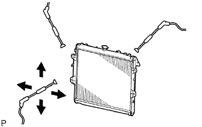

KÉT NƯỚC > VỆ SINH TRÊN XE |
| 1. KIỂM TRA TẮC KẸT CỦA CÁC CÁNH TẢN NHIỆT |
|  |
Kiểm tra rằng két nước và giàn nóng không bị tắc bởi lá, bụi bẩn hoặc côn trùng. Hãy làm sạch các chỗ nối ống.
Nếu các cánh tản nhiệt bị tắc, hãy rửa chúng bằng nước hay súng rửa bằng hơi nước.
| Áp suất phun | Điều kiện tiêu chuẩn |
| 2,942 đến 4,903 kPa (30 đến 50 kgf/cm2, 427 đến 711 psi) | 300 mm (11.81 in.) |
| 4,903 đến 7,845 kPa 50 đến 80 kgf/cm2, 711 đến 1,138 psi) | 500 mm (19.69 in.) |
Hãy làm khô cánh tản nhiệt bằng súng khí nén.